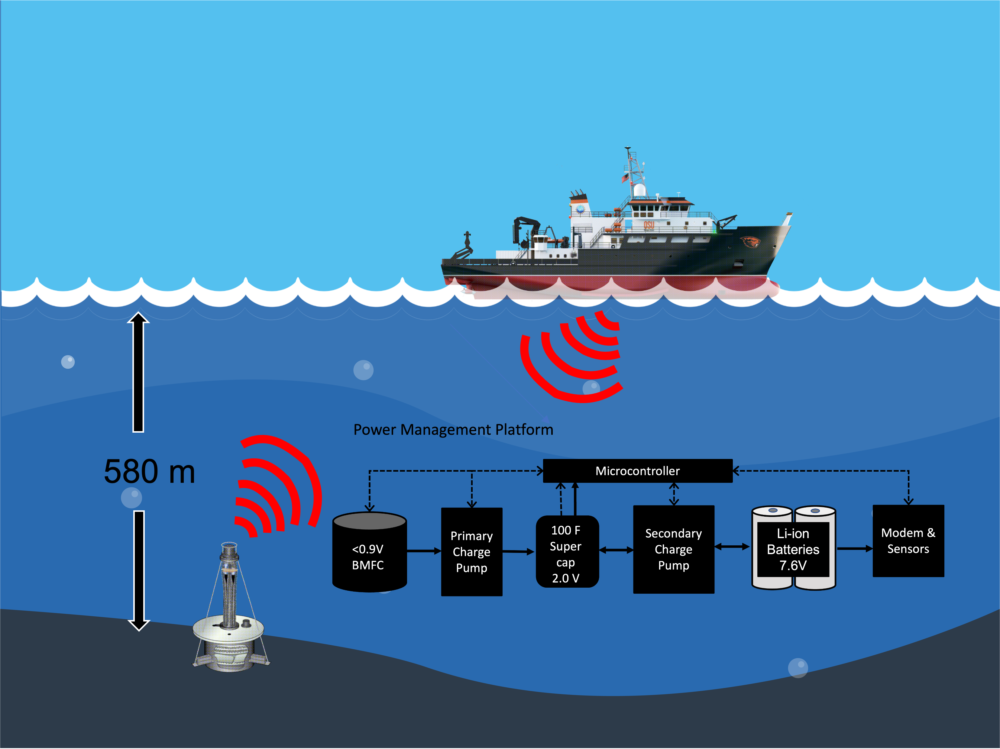
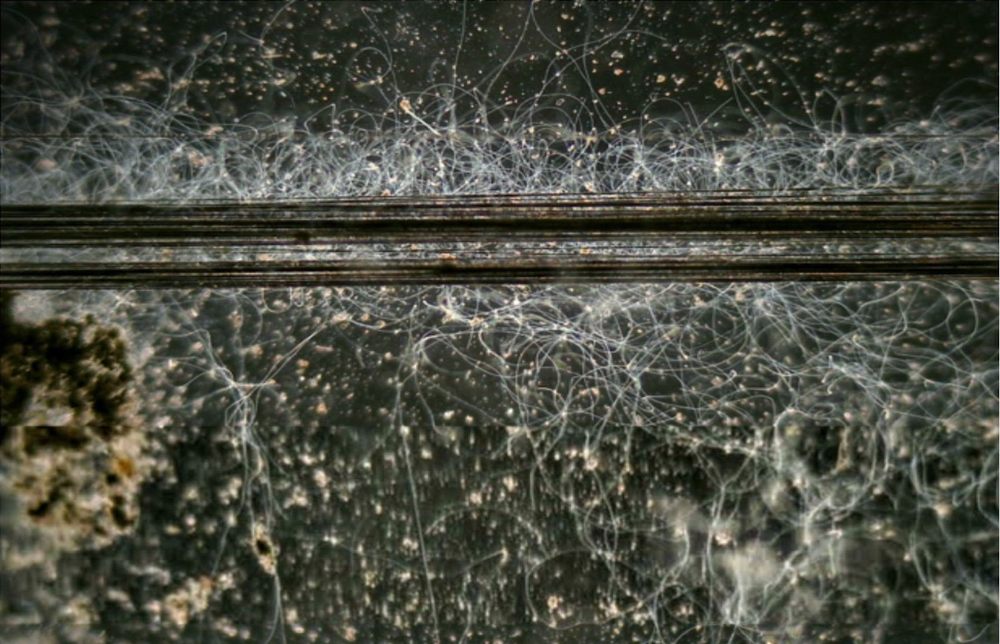

Our Research
Our research centers on microorganisms capable of extracellular electron transfer, allowing them to interact with electricity in unique ways. By studying these microbes — such as cable bacteria — we aim to harness their properties for applications in environmental sustainability, including pollution mitigation, carbon sequestration, and restoration of ecosystems.

Microbial Fuel Cells
Microbial Fuel Cells (MFCs) are bio-electrochemical systems that drive electric current by using bacteria as a catalyst to oxidize organic and inorganic matter. Our research focuses on advancing the efficiency and applicability of MFCs in sustainable energy generation.
A Benthic Microbial Fuel Cell (BMFC) is a specialized design deployed in the benthic zone of aquatic environments, enabling long-term, sustainable power generation for underwater applications.
Learn more →
Cable Bacteria: Living Wires Electrify the Mud
Cable bacteria are long filamentous bacteria capable of conducting electrons over centimeter distances. We study their ecology and potential applications in environmental bioremediation and energy harvesting from sedimentary environments.
Cable bacteria filaments interacting with an actively poised electrode — doi:10.1128/aem.00795-24. Figure credit to Robin Bonné and Kartik Aiyer.
Learn more →
Microbial Electrolysis Cells
Microbial Electrolysis Cells (MECs) are systems that utilize microbial activity to produce hydrogen gas through electrolysis. Our research focuses on optimizing MECs for hydrogen production from various organic waste sources.
Learn more →
Crustaceans Bioturbators in the Tidal Sediment
Bioturbation by crustaceans in tidal sediments plays a crucial role in nutrient cycling and microbial activity. Our work explores how these organisms influence sedimentary biogeochemistry and their potential for enhancing environmental resilience.
The blue mud shrimp, Upogebia pugettensis, art by Emy Daniels collaborating with Dr. John Chapman (Oregon State University).
Learn more →